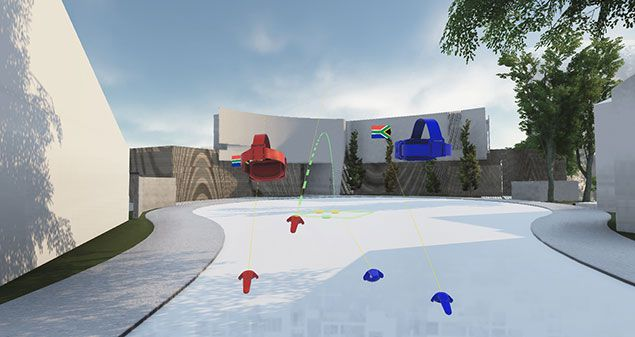
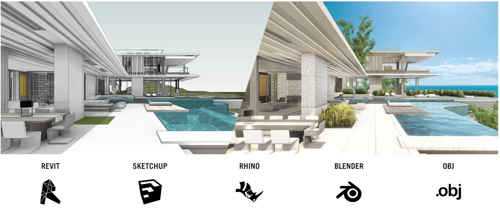
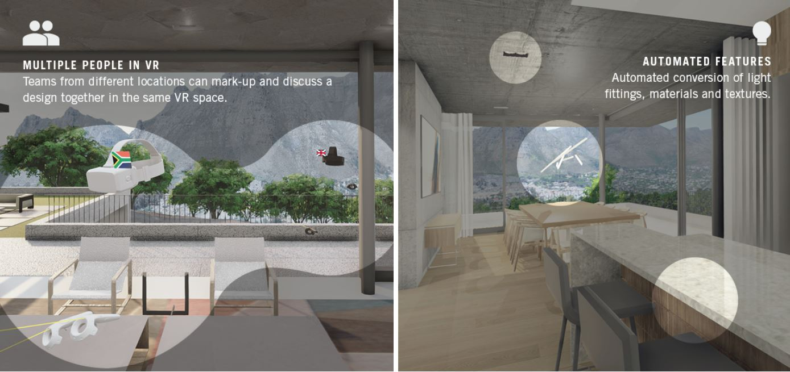

Instant VR¶
Note
- LUX Walker Instant 3D to VR Automated workflow tool.
Convert your 3D model to VR, interact and collaborate. Make faster design decisions, present your work.
Automated Workflow¶
Note
- LUX WALKER is meant to be as simple as possible.
We Geolocate your model, carry across your layers, import your cameras and views and we convert your texture maps to realistic digital materials.
This allows you to review your design quickly without worrying about model setup.
Because we keep all the complexities in the back of this simplified workfow, most of your work stays in your modeling program. We offer support for many tools and with OBJ support you can export from the others.
Easy Collaboration¶
Note
- LUX WALKER has been developed as a real-time visualization tool to improve workflow and reduce communication errors.
Join multiple people in a virtual building, collaborate with your team members throughout design development and present your final design to clients, from anywhere in the world.
Just send them .WALK export.
Typical Workflow¶
Typically LUX Walker is used like so:
Export your 3D Model¶
Note
- First, you need to export your 3D model so we can view it in LUX Walker.
We have exporters for various 3D tools, and support .OBJ files for advanced users.
Run LUX Walker¶
Note
- Second, you need to load this export into LUX Walker.
LUX Walker will load most files, but VR has a limit to the amount of geometry you can run smoothly. Contact Support if you have any problems.
Fix any Materials.¶
Note
- Our conversion process aims to generate realistic materials from your provided materials and texture maps.
In some cases this might result in incorrect materials. Our Material tool allows you to easily switch between various types of materials or choose from a growing library of built in materials.
NEW MATERIAL TOOL GOES HERE
Add Context or Panorama¶
Note
- Context Immediately makes a project more immersive and can help solve problems earlier in the design process.
You can add context using the Terrain Toggle in the Environment Tool. Or add a panorama to the project using the Panorama Tool
PANORAMA TOOL GOES HERE
Add Vegetation and detail items.¶
Warning
- Complex 3D items will slow down your VR Experience.
LUX Walker includes a large library of detail items and vegetation. Use these wherever possible.
VEGETATION AND ITEMS HERE
Save your File¶
Note
- Closing LUX Walker will ask you if you want to Save your File.
You can also save from the Menu Panel in VR or by clicking the Home Button on the desktop using the Mouse.
SAVE FILE
Relink a new Export¶
Note
- Keep LUX Walker changes and reload a new Model